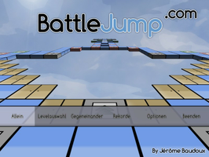
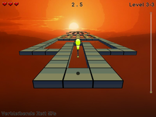
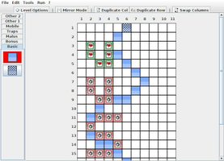
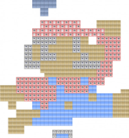
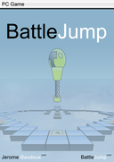

Battle Jump
Dieser Artikel wurde für die folgenden Ubuntu-Versionen getestet:
Ubuntu 14.04 Trusty Tahr
Zum Verständnis dieses Artikels sind folgende Seiten hilfreich:
Battle Jump 
 ist ein Geschicklichkeitsspiel. Der Jumper, welcher nur durch Sprünge bewegt werden kann, muss durch Springen ins Ziel gebracht werden. Hier ist der Zeitfaktor der springende Punkt. Fallen und Löcher erschweren die Steuerung und das Erreichen des Ziels. Der Schwierigkeitsgrad steigt in den Spiellevels nach und nach an.
ist ein Geschicklichkeitsspiel. Der Jumper, welcher nur durch Sprünge bewegt werden kann, muss durch Springen ins Ziel gebracht werden. Hier ist der Zeitfaktor der springende Punkt. Fallen und Löcher erschweren die Steuerung und das Erreichen des Ziels. Der Schwierigkeitsgrad steigt in den Spiellevels nach und nach an.
Im Spiel können zwei Spieler mit Split Screen gegeneinander antreten. Das Spiel kann durch Zusatzlevel erweitert werden.
Installation¶
|  |  |  |
| Menü | Spielszene | Leveleditor |
Vorbereitung¶
Für das Spiel sind die folgenden Pakete erforderlich [1]:
libsdl-mixer1.2
libsdl-image1.2
libsdl-ttf2.0-0
libsdl1.2-dev
libsdl-image1.2-dev
libsdl-mixer1.2-dev
libsdl-ttf2.0-dev
libcurl4-openssl-dev
 mit apturl
mit apturl
Paketliste zum Kopieren:
sudo apt-get install libsdl-mixer1.2 libsdl-image1.2 libsdl-ttf2.0-0 libsdl1.2-dev libsdl-image1.2-dev libsdl-mixer1.2-dev libsdl-ttf2.0-dev libcurl4-openssl-dev
sudo aptitude install libsdl-mixer1.2 libsdl-image1.2 libsdl-ttf2.0-0 libsdl1.2-dev libsdl-image1.2-dev libsdl-mixer1.2-dev libsdl-ttf2.0-dev libcurl4-openssl-dev
Projektseite¶
Nun von der Projektseite  die aktuelle Version des Spiels für die eigene Rechnerarchitektur (x86/x64) herunterladen und anschließend entpacken [2], z.B. nach ~/Spiele im Homeverzeichnis.
die aktuelle Version des Spiels für die eigene Rechnerarchitektur (x86/x64) herunterladen und anschließend entpacken [2], z.B. nach ~/Spiele im Homeverzeichnis.
Hier in den Ordner BattleJump wechseln und die Ausführrechte [3] für die Dateien BattleJump* setzen.
Spielstart¶
Anschließend das Spiel über BattleJumpLauncher starten [4], auf Wunsch einen Menüeintrag vornehmen [5]. Im sich öffnenden Starter können einige Einstellungen vorgenommen werden:
| Menü | |
| Menüpunkt | Beschreibung |
| "Game" | Unter "Language" kann die Spielsprache eingestellt werden. Spielerfarben und sonstige Änderungen können hier vorgenommen werden. |
| "Sending Scores" | Im Reiter "Sending Scores" können die Übermittlung von Highscores aktiviert werden, welche auf der Projektseite einsehbar sind. Hierfür ist ein Zugang erforderlich. Dieser kann über "Create Account" angelegt werden. |
| "Video" | Auflösung und Videoeinstellungen verändern. |
| "Audio" | Einstellungen zur Musik und den Soundeffekten vorehmen. |
Über "RUN THE GAME" kann das Spiel gestartet werden.
|  |
| Zusatzlevel MarioBig |
Zusatzlevel¶
Zusatzlevel liegen als .bjl-Dateien vor und werden über "ADD/REMOVE LEVELS" mit dem Levelmanager importiert. Alternativ kann die Datei list.bjo mit einem Editor [6] bearbeitet werden. Hier den Namen des Levels ohne Dateiendung eintragen (z.B. ubuntuusers für das Level ubuntuusers.bjl), abspeichern.
Diese werden in den versteckten Ordner ~/.BattleJump/Levels/ im Homeverzeichnis kopiert. Zusatzlevel aus der Community werden in den Unterordner Custom einsortiert.
Die Zusatzlevel können einzeln aber auch als Archiv heruntergeladen werden:


Infobox¶
| Battle Jump | |
| Genre: | Geschicklichkeitsspiel |
| Sprache: |     |
| Veröffentlichung: | 2008+ |
| Entwickler: | Jérôme Baudoux |
| Systemvoraussetzungen: | - |
| Medien: | Download |
| Strichcode / EAN / GTIN: | - |
| Läuft mit: | nativ |

- Erstellt mit Inyoka
-
 2004 – 2017 ubuntuusers.de • Einige Rechte vorbehalten
2004 – 2017 ubuntuusers.de • Einige Rechte vorbehalten
Lizenz • Kontakt • Datenschutz • Impressum • Serverstatus -
Serverhousing gespendet von